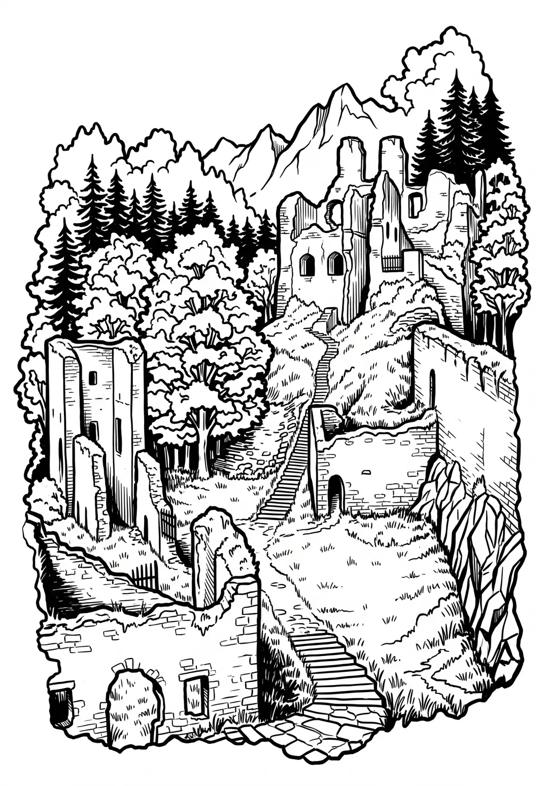

Zřícenina Dívčí Kámen
Dívčí kámen (případně jen Dívčí, též Maidstein, Menštein nebo Maldštajn) je zřícenina gotického hradu u městečka Křemže v okrese Český Krumlov. Stojí v nadmořské výšce 470 m na skalnatém vrchu ze tří stran obtékaném Křemžským potokem u jeho soutoku s Vltavou. Místo, na kterém hrad stojí, bylo osídleno již v pravěku.
Více na Wikipedii